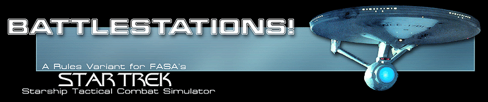

AFTER ACTION REPORTS
SCENARIO ONE: Exercise SUPERIOR MARKSMAN
SCENARIO TWO: Romulan Incursion of 2288
SCENARIO THREE: Convoy, Gamma Hydra, Sector Four
DOCUMENTS AND FILES
Sample Index, Revised Turn Sequence, and Optional Rules
Sample Firing Chart, Damage Chart, and Master Starship Control Panel
Sample Starship Recognition Manual Page (Enterprise-Class Heavy Cruiser)
Sample Captain's Log (Federation)
Sample Captain's Log (Klingon)
Sample Captain's Log (Romulan)
Sample Starship Hex Markers
SITE DESIGN AND HOSTING BY: